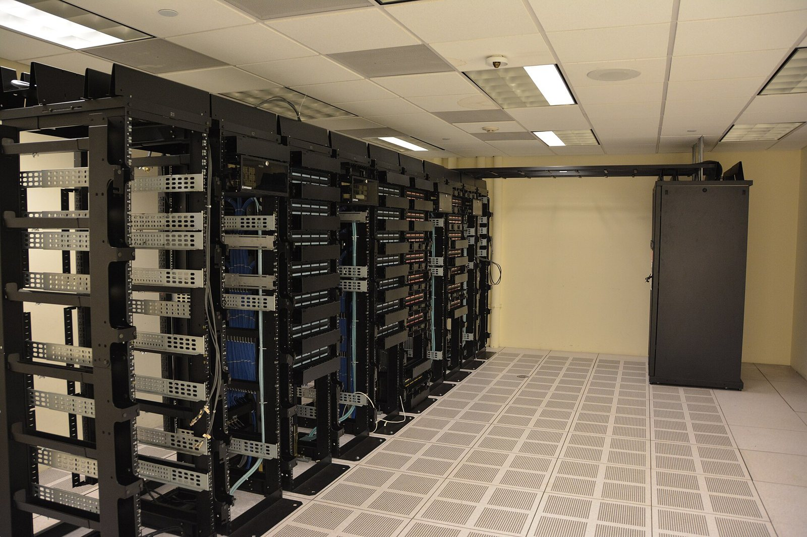

Il 26 agosto 2026 Nvidia (NVDA) pubblicherà i risultati del secondo trimestre dell'anno fiscale 2027 (Q2 FY2027 — secondo trimestre dell'esercizio fiscale 2027, terminato il 26 luglio 2026). È il report finanziario più atteso di Wall Street: l'azienda di Jensen Huang ha guidato il management ad aspettarsi ricavi di circa $91 miliardi (con una tolleranza del ±2%), una cifra che pochi anni fa avrebbe sembrato fantascienza. Il consensus degli analisti (EPS — Earnings Per Share, ovvero Utile per Azione) per l'intero anno fiscale FY2027 è di $8,79, in crescita del 92% rispetto all'anno precedente. Ben 43 analisti su 47 raccomandano di acquistare il titolo (Strong Buy — acquisto forte). Ecco tutto quello che devi sapere prima dell'annuncio.
Le Cifre Chiave da Monitorare il 26 Agosto
Quando Nvidia pubblica i suoi risultati trimestrali, il mercato analizza non solo i numeri del trimestre appena concluso, ma soprattutto la guidance per il trimestre successivo. È questa proiezione che, storicamente, muove il titolo in modo più marcato nel dopo-borsa (After Hours — scambi fuori dall'orario ufficiale di mercato).
| Metrica | Guidance / Consensus | Confronto | Note |
|---|---|---|---|
| Revenue (Ricavi) Q2 FY27 | ~$91 miliardi | Guidance ufficiale ±2% | Dominato dal Data Center (centro dati) |
| EPS FY2027 (Consensus) | $8,79 | +92% vs FY2026 | Stima media analisti per l'intero anno |
| Raccomandazioni analisti | 43/47 Strong Buy | 91% tasso di acquisto | Consenso tra i più alti di Wall Street |
| Target Price medio | $304,32 | ~+47% upside potenziale | Media dei price target a 12 mesi |
💡 Impara: EPS (Earnings Per Share — Utile per Azione)
L'EPS (Earnings Per Share — Utile per Azione) è uno degli indicatori più importanti per valutare la redditività di un'azienda quotata in borsa. Si calcola dividendo l'utile netto totale per il numero di azioni in circolazione. Un EPS in crescita indica che l'azienda guadagna di più per ogni azione posseduta dagli azionisti. Il Consensus EPS (stima di consenso — media delle previsioni degli analisti) è il riferimento su cui il mercato giudica se un'azienda ha "battuto" o "mancato" le aspettative: battere il consensus anche di pochi centesimi può far salire il titolo, mancarlo di poco può farlo crollare.
Nvidia e l'AI: Il Motore del Data Center
La crescita di Nvidia è quasi interamente guidata dal segmento Data Center (centro di elaborazione dati), che include la vendita di GPU (Graphics Processing Unit — processori grafici) come la serie H100 e H200 — le più richieste per addestrare e far girare i modelli di intelligenza artificiale. Aziende come Microsoft, Google, Amazon, Meta e OpenAI sono tra i principali acquirenti dei chip Nvidia.
Il ciclo capex (capital expenditure — spesa per investimenti in beni capitali) dell'AI non mostra segni di rallentamento: i hyperscaler (le grandi aziende cloud) continuano ad aumentare i budget di spesa per l'infrastruttura AI, e Nvidia cattura la quota dominante di questa spesa. Secondo le stime, il segmento Data Center potrebbe da solo superare i $25 miliardi di ricavi nel trimestre.
La Domanda Chiave: La Guidance Basterà?
Il rischio principale per Nvidia non è che i risultati del Q2 siano deludenti — quasi certamente non lo saranno — ma che la guidance per il Q3 FY2027 (terzo trimestre, che si concluderà a ottobre 2026) non superi abbastanza le aspettative del mercato. Il fenomeno "buy the rumor, sell the news" (compra la voce, vendi la notizia — il titolo sale in anticipazione e poi scende quando il dato arriva) è un rischio reale per un'azione già prezzata per la perfezione.
Gli analisti di Susquehanna evidenziano una forte visibilità della domanda nel breve termine, con ordini solidi per i prossimi trimestri. Tuttavia, il mercato è sempre alla ricerca di sorprese positive rispetto alle aspettative già elevate.
| Scenario | Reazione Attesa del Titolo | Probabilità stimata |
|---|---|---|
| Beat & Raise (ricavi sopra $91 mld, guidance Q3 ancora più alta) | Rally significativo | ~40% |
| In Linea (ricavi vicini a $91 mld, guidance conservativa) | Reazione neutra/lieve calo | ~35% |
| Miss (ricavi o guidance sotto le aspettative) | Correzione marcata | ~25% |
💡 Impara: Anno Fiscale (Fiscal Year) vs Anno Solare
L'anno fiscale (Fiscal Year — FY) di un'azienda non coincide necessariamente con l'anno solare (gennaio-dicembre). Nvidia, per esempio, ha un anno fiscale che inizia a febbraio e termina a gennaio dell'anno successivo. Questo è il motivo per cui i risultati del "Q2 FY2027" di Nvidia si riferiscono al periodo maggio-luglio 2026, e non all'anno solare 2027. Quando si leggono le notizie sulle trimestrali, è fondamentale distinguere tra anno fiscale e anno solare per non creare confusione sui periodi di riferimento.
Il Contesto: AI Infrastructure e la Corsa ai Chip
La settimana appena conclusa ha confermato il sentiment positivo attorno all'AI infrastructure (infrastruttura per l'intelligenza artificiale). Titoli come Coreweave (+24% il 12 agosto), Super Micro Computer (+18%) e Nebius (+34%) hanno messo a segno rally significativi nella settimana del 11-14 agosto, sostenuti dall'entusiasmo per la spesa AI e dall'inflazione USA sotto le attese.
Questo contesto è un vento favorevole per Nvidia: se le aziende cloud continuano a spendere massicciamente in GPU, i ricavi di Nvidia rimarranno elevati o cresceranno ulteriormente. Il ciclo attuale di investimenti in AI è paragonato dagli analisti agli investimenti nella fibra ottica negli anni Novanta — con la differenza che questa volta la domanda sembra più concreta e sostenuta da modelli di business reali.
Cosa Guardare il 26 Agosto
Oltre ai numeri puri, gli investitori presteranno attenzione a:
- Guidance Q3 FY2027: il numero più importante. Deve essere sopra le aspettative per generare un rally
- Gross Margin (Margine Lordo — differenza tra ricavi e costo del venduto, in percentuale): un margine lordo sopra il 70% sarebbe un segnale molto positivo
- Blackwell Ramp-Up (accelerazione della produzione della nuova architettura di chip): qualsiasi notizia sulla scalabilità della nuova generazione di GPU
- Commentary sul demand outlook (prospettive della domanda): cosa dice il management sulla visibilità degli ordini nei prossimi 12-18 mesi
- Buyback e dividendi: eventuali piani di riacquisto azioni o aumenti del dividendo (Shareholder Returns — remunerazione degli azionisti)
La call con gli analisti inizierà alle 14:00 PT (23:00 ora italiana) del 26 agosto. I risultati saranno pubblicati circa alle 13:20 PT (22:20 ora italiana), dopo la chiusura di Wall Street.
Fonte dati: Nvidia Newsroom, MarketBeat, TipRanks, Intellectia.ai, Finance Calendar, Quiver Quantitative. I dati EPS e guidance si riferiscono alle informazioni pubblicamente disponibili al 16 agosto 2026. I risultati effettivi del Q2 FY2027 saranno pubblicati il 26 agosto 2026.
Nota metodologica: Le stime degli analisti e i target price sono medie di consensus e possono variare significativamente. Questo articolo è a scopo informativo e non costituisce consiglio di investimento. Le probabilità degli scenari riportati sono indicative e non costituiscono previsioni certificate.